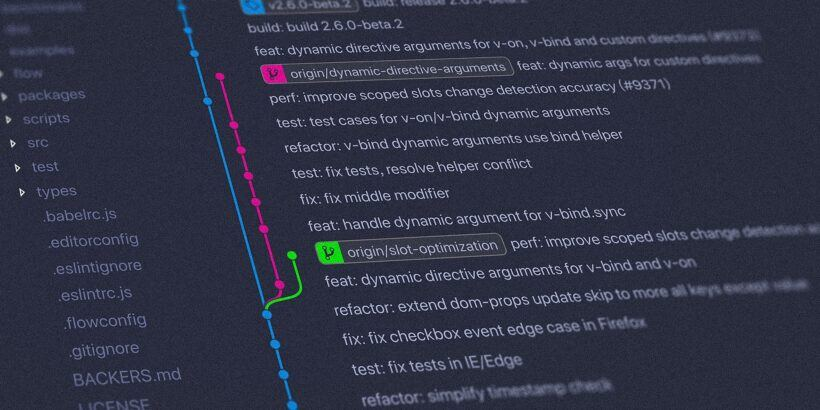

January 18, 2021
How to create a scalable vue.js setup (Part I)

If you know me a little bit or read my bio in social media, you'll probably have noticed that I'm a big fan of vue.js (and if you don't follow me right now, consider following me on twitter 😜).
This is for a reason: Coming from angular, I personally like the approaches they chose to organize and do things. They have dependency injection, routers, stores, a test harness and much more. However, it has also a big downside: Everything feels a bit big and bloaty and I always had the feeling, that I could not develop as fast in angular as I should.
Introducing my vue.js setup
If you don't know vue.js, you can check it out here. Vue.js is a rather small framework (20KB compressed and minified) that focuses on the "view" part of the application (that's why it's pronounced /vjuː/, like "view" - just in case you wondered). Additionally, there are plenty of resources, plugins and so on that you can use to customize it to your needs (a comprehensive list is available here: awesome-vue). So let's start:
The Foundation: Vue-cli
Comparable to angular, the vue environment also has a cli that you can use to generate an application according to your needs. Even better, you can choose what tools you like to use and you can configure it to your needs (e.g. webpack) without ejecting the configuration. A simple command
vue create <projectname>
creates a new project and you are able to choose, which css-framework you like to use, if you want babel and / or typescript, if you create a PWA (automatic manifest generation), which test framework for unit and e2e tests you prefer and if you opt for eslint or the deprecated (but still awesome) tslint. This alone is a huge advantage, as you are able to create the environment in a way that perfectly matches your needs. I personally use the configuration
[Vue 2] dart-sass, babel, typescript, pwa, router, vuex, unit-jest, e2e-cypress
but this can be very opinionated. After creating the project, you can launch a pretty cool dashboard via
vue ui
which shows you not only your projects (it's possible to have a multi-project Monorepo in vue), but also the bundle sizes and the transpilation statistics. It's awesome!
Getting stuff: Dependency injection
As mentioned before, vue only concentrates on the view part of your application. So the next thing I usually tend to do is to introduce dependency injection and for this task, I absolutely love inversify.js although people are discussing on how to proceed with future maintenance. It's very well established and plenty of larger projects are using this, so that I'm optimistic that even if the maintainer does not support it in the future, there will be forks or other ideas to further support this framework.
After installation, I basically do the whole DI configuration in three files:
- di.types.ts
export const TYPES = {
/**
* Services
*/
DATA_SERVICE: Symbol.for('DATA_SERVICE'),
};
This file defines Symbols, so that inversify has unique tokens to inject things.
- di.container.ts
import { Container } from 'inversify';
import getDecorators from 'inversify-inject-decorators';
export const container = new Container({ defaultScope: 'Singleton' });
const { lazyInject } = getDecorators(container);
export default lazyInject;
This file is just to create a singleton container and make it possible to "lazy inject things". This is necessary due to a babel / webpack issue: On startup of the application, several files can request stuff and if you don't have the container imported from an own module, some things like lazy inject won't work
- di.config.ts
import 'reflect-metadata';
import { container } from '@/di.container';
import { TYPES } from '@/di.types';
import { DataService } from @/services/data.service.ts;
container.bind<DataService>(TYPES.DATA_SERVICE).to(DataService);
Here we bind a service to our previously defined Symbols. That's basically the whole magic about itroducing dependency injection. Easy, wasn't it?
Property decorators
The next thing to tackle for a scalable application is, that we want to have a well written component that is easy to read and to reuse. Vue components are usually single file, which has it's benefits (e.g. if you want to change some css, and then html and oh, you also need to introduce this property in typescript...). It's also easier to maintain some code standard about how large a component should possibly become, if you had single file components (e.g. >250loc => linter error). To additionally increase readability, I like to use typescript class components flavoured with vue property decorators.
Here's some example, how a class component with decorators and dependency injection could look like:
<template>
<div class="hello-world">
{{ message }}
The sum of {{ a }} + {{ b }} is {{ sum }}. Our current mood is {{ mood }}
</div>
</template>
<script lang="ts">
import lazyInject from '@/di.decorator';
import { TYPES } from '@/di.types';
import { Component, Prop, Vue } from 'vue-property-decorator';
@Component
export default class HelloWorld extends Vue {
mood!: string;
@lazyInject(TYPES.DATA_SERVICE)
dataService!: DataService;
@Prop()
message!: string;
@Prop()
a!: number;
@Prop()
b!: number;
get sum() {
return a + b;
}
async mounted() {
this.mood = dataService.get(`/api/v1/mood`);
}
}
</script>
<style lang="scss" scoped>
.hello-world {
color: blue;
}
</style>
pretty neat, isn't it? 😁 Having this result is a good first step for creating a scalable vue app. If you are interested in more of this topic, I'm gonna talk about state management, testability and deployment (e.g. different environments) in the next part of this article series. Thank you for reading!